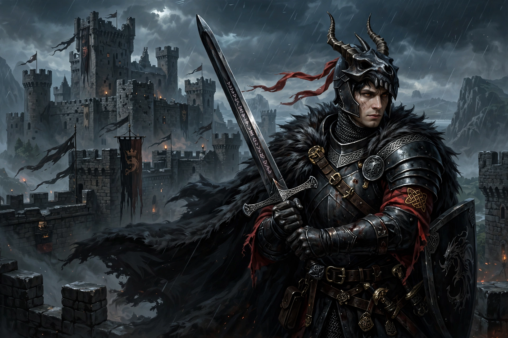

Mordred or Modred (Welsh: Medraut) is a figure in Arthurian legend, known as a knight of the Round Table who betrays King Arthur and is killed by him — while mortally wounding Arthur — at the Battle of Camlann. In later tradition he is Arthur's son by his half-sister Morgause, and usurps the throne during Arthur's absence.

| Mordred | |
|---|---|
| Based on | Medraut of Welsh tradition |
| Family | Arthur (father), Morgause (mother) in later versions |
| First mention | Annales Cambriae (537 entry) |
The earliest reference is in the Annales Cambriae, noting the Battle of Camlann in which Arthur and Medraut fell, without stating kinship or enmity. Geoffrey of Monmouth's Historia Regum Britanniae made Modred Arthur's nephew who seizes the crown and Queen Guinevere while Arthur campaigns abroad.
In the Vulgate Cycle and Malory's Le Morte d'Arthur, Mordred is the incest-born son of Arthur and Morgause, survives being drowned as an infant in a prophecy, becomes a knight, helps expose Lancelot and Guinevere, and is made regent before rebelling. At Salisbury Plain, Arthur kills him with a spear but receives his own death wound.
Mordred appears in works from Tennyson to T.H. White's The Once and Future King and modern fantasy, sometimes as a tragic or sympathetic figure.